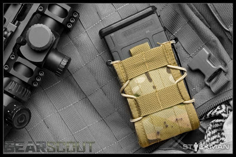

Over at Military Times, my favorite column is "GearScout." They review all sorts of soldier stuff. For example, see this review of boots for the Afghan AO.
Yesterday they reviewed an interesting new mag pouch from High Speed Gear. Called the "TACO" Modular Single Rifle Magazine Pouch, it is so named because the main body folds around the magazine like a taco. The design allows you to use the pouch with virtually any kind of mag.

Here is the GearScout review. I will have more on the other side.
HSGI (High Speed Gear Inc) released their “Taco” in prototype form last year, and since then it’s become one of the best mag pouches that you’ve never heard of. What does the Taco do that makes it different? Simple, it uses polymer sides, cordura front and back, and shock cord lacing to lock just about any magazine into place. USGI, HK, PMAG, ARC, FAL, AK 30/ 40, LR20 and M14 magazines have all been swallowed and gleefully spit out on demand.
HSGI gives the following information on their website:
“TACO”, Modular single rifle mag pouch. This unique pouch, compared to similar mag pouches in it’s class, will hold more types of mags than just the AR series of mags. Not only will it hold AR type mags including P-MAGS, it will also hold Magazines for the AK, FAL, M14, SR25, M1A1 20 rnds, G3, Saiga 12, and more….. even some types of radios. It will also hold the large Flash bangs and the M-18 Smoke grenades. This mag pouch measure 3″ in width compared to the top selling mag pouch which is wider and disrupts much needed space on the user’s modular platform. Made of Cordura, Kydex and shock-cord, it is silent when stuck against and while extracting the mag. The “TACO” maintains a positive grip on the mag on which is adjustable and does not need any other use of a securing system unless desired upon by user preference. Webbing tabs are sewn in on the top for use of “over the top” bungee retainers if desired (not included). Additional loop velcro is sewn in the inside if the user wishes to use adhesive backed hook velcro on his magazine body for added security.
What we like about the Taco is the ability to switch different weapon platforms while not having to switch over all the ammo pouches. As nice as this is, I’m sure someone will point out that there are a lot of us who setup different carriers and equipment for different taskings, and I’ll agree. The next thing the Taco does is give smooth release on the magazines regardless of whether its wet, dry, hot, cold, muddy or clean. That’s something that can’t be said for all gear. Reloads are quick and easy thanks to the shock cord which laces the body. From inside a vehicle, or from body positions that make a direct upward pull difficult, the Taco has no problems. I’ve found it easy to pull forward (away from my body) and rip the mags free at an angle. This is all possible while still securely retaining the magazines.
Perhaps what has caught my attention most is the ability of the Taco to go from being a magazine pouch of various calibers, to being a grenade or other accessory pouch. While I prefer to have a strap locking my pistol into a holster, the Taco holds my Glock 19 very well, and while my days of throwing HE are largely over, flash bangs, smoke and CS grenades also work quite nicely.
In training, I’ve used this with LE as well as MIL gear, and I’ve loaned it out to others who have all come back with positive things to say. I’ve also used it when teaching younger kids reloads (my friends kids live interesting lives). I found out a long time ago that to see how well something works, give it to someone who has no artificial perceptions of how something should or shouldn’t work. Not only does this pass the test with novices, but with with guys who were crawling in jungles and hills when many of us were kids
HSGI went a step further with their Double Decker Taco. By taking the standard Taco and adding a pistol magazine pouch, they created additional room for secondary equipment. You can see in the below pictures that while one of the pouches is carrying a Glock 17 magazine, another one of the pouches is carrying a multitool. Flashlights are another item which fits nicely inside the pistol mag pouch.
While I have yet to see anything similar to the Taco, this idea is too versatile for people not to rip off, which is a shame, HSGI deserves solid credit for this creation, its a good one. The modular ability to hold multiple caliber magazines, as well as equipment make this an easy item for me to recommend. Even if you only have one or two on your rig, you’ll find they come in more than a little useful.
The video is from the HSGI website, it shows the Taco in use quite nicely.
Now at $28.00 a pop, these pouches are pricey to say the least. Here is the aforementioned video. Please watch and then see my comments below.
OK.
Number One: I'm sorry, but I would not use this guy as a factory rep demo-ing any military gear. This guy is a Taco Bell Grande.
Number Two: The boy's size merely accentuates the principal problem with front load chest rigs. You cannot get close to the ground, and if you throw yourself down on this array, you'll break your sternum and every rib you own and still be the most obvious target in the grass. (The popularity of chest rigs comes principally from the fact that you can get in and out of a vehicle easier than with other systems. This was -mostly - fine for Iraq missions. The troops in Afghanistan where the Taliban must be sought out and defeated on foot in a variety of rough terrain? Not so much.) But let's assume that the Taco, like any other mag pouch, can be arranged to the side and thus still be useful, which I'm sure it can.
Number Three: The value of a mag "pouch" which is versatile in terms of supporting any change of rifle mag or similar-sized piece of equipment or ordnance such as a radio or smoke grenade is to be appreciated. The value of a mag "pouch" which is a pouch that does not protect what it holds from the environment that it will be exposed to (mud, ice, sand, etc.) is less than fascinating in my opinion.
Number Four: As slick as it seems to be as a mag carrier for a "range rig," it is still overpriced by a considerable margin.
Interesting idea, though. I can see one or two of them being added to a rig for mission-specific items which change frequently, but to hold ALL the rifle mags that are your life insurance policy on the two-way range of life?
No way.
Your opinions?
Mike
III

26 comments:
I don't think the price is terrible, my main concerns would be what you already mentioned:
1-there's no protection from the elements.
2-if there's no way to have them secured to a load vest on the sides, they need to be re-designed for that.
And I agree, someone else should have been used for the demo video.
Grog
III
I'm not a fan of a magazine pouch with a flap to cover the mags. A flap only complicates the removal of the mag. Weather, environment....should have little impact on a mag that is rounds down in the pouch.
Regarding various magazine pouch types, styles, there are so many out there for one to choose from that to recommend one over another is futile.
To flap or not to flap. To each their own.
No flaps for me.
DAN
III
Yeah, ditto on the spokesmodel.
How does the magazine not fall out while low crawling? When I was in boot camp, I was doing the daylight infiltration course, and some mail firmly ensconced in my cargo pocket of the old woodland fatigues fell out right into my senior's hand. How would the magazine not fall out?
HSI makes really good gear. Their other magazine pouches are more worthwhile, mainly because they have very good top flaps for their magazine pouches that will FIRMLY hold AK and FAL mags.
...personally i think it may be a little late in the game to change my rig,i like the concept tho,maybe for sidearm mags it could/would be beneficial...
The expedient universal mag pouch:
Fancy SAW Pouch f/ Tactical Tailor @ $36/each
Not-so-fancy Surplus SAW Pouch @ $9.95/ea
Each holds 7 30-round AR/M16 mags or 5 30-round AK mags.
Someone pls grab 5 20-round FAL or M14 mags and let us know if they fit.
Recommended -- the next LBE harness I set up with have 1 SAW pouch on each side, plus 2 1-qt canteens plus a modern buttpack.
It'll do if I will.
Jay, I too would have reservations about these pouches for low-crawling, even with the velcro interior that would mate with a velcro patch on the mag itself. The cords might -- just might -- be snaggy in the woods.
But MAN are they FAST.
And the satisfied customer in the video has definitely practiced his reloading drills.
No way, would I ever double-stack mags to the front, like that. After the first shot, I am down as low as I can get.
In my AO, bare mags sticking out to catch on vines, long grass and wires would be a no go. Although, in the sand that would not be an issue. I like a flap over my mags. They aren't complicated. During an engagement, I know I am going to have to change mags quickly, so I just start reaching earlier. When one mag goes dry, already having another in your hand is even faster than the "Taco". That might not be feasible for small hands, though.
I can see the "Taco" being great for what we saw in the video. Guys who are planning to fight standing up. Instead, show me a demo of a guy crawling in the bush, and reloading with the "Taco" in the prone. I am willing to be proven wrong.
I guess my doctrine is keeping my mags as clean and dirt/water free as possible. I might like 1 of these for a quick reload to grab but otherwise I want my mags clean so they function properly. I will not wear a rig with mags in front like this for the very reason you stated. I have a hard time getting close enough to the ground these days anyway.
The price is far too high for the average person who will throw his/her gear in the closet with hopes of never needing it. For anyone in a job where fast mag swaps mean life and death the cost does not matter. I'll wait until they start showing up on ebay at 9 bucks a pop. Just like the Pmags for the LR308, I waited a few months and now get them at 15 bucks each. Sure, waiting could be a really bad decision, but in my case I have my family preped for our abilities.
Weaver
Mike Speaking of Tacos . . . . .
Seen the latest coming out of TX re Los Zetas????
http://www.thecypresstimes.com/article/News/National_News/BREAKING_MULTIPLE_RANCHES_IN_LAREDO_TX_TAKEN_OVER_BY_LOS_ZETAS/31835
"I swear, there's a sandwich in here somewhere."
J2T
III
Most mag pouches are reasonably modular anyway. If you can afford different kinds of guns getting a few more pouches isn't a price issue. You really want a setup per gun anyway.
I would have to try this thing myself as I'm a bit concerned the darn mag could fall out in rugged and realistic conditions.
As for the chest rig I disagree. Having used both for work I can attest to chest rigs being more stable to move, especially run, in as well as more useful for getting in and out of tight spaces like buildings or vehicles. Also my access to essential stuff like mags is faster. Do it right and they aren't that thick. You can get just as low with X amount of gear on a chest rig as you can with it around your waist. It doesn't matter if you are in the prone and take a rifle bullet to the shoulder/ back or the lower back/ butt area you are hosed either way.
The Pro's use this stuff for good reasons.
I wouldn't use a pouch in the front since it impedes crawling, which is essential. I have two 9 mag pouches that fit on your utility belt on either side or in back and they cost about 10 bucks each from cheaperthandirt.com. I use the 6.8 SPC, which is the same size mag as the 5.56, so they work for both. They have full covers, also essential to keep dirt out. May be harder to get out in a hurry but won't jam when you do. What good does it do to pull one out of an open top only to jam up on you do to whatever gets in there? If you train at all, you will find shit getting stuck up in your mags with an open top. If you are not crawling, you are not training.
Also, perspective is important. If you patrol standing up, you tend to look for up-right enemies. If you are crawling, you are looking for anything that moves. Keep in mind that your enemy may be crawling. That perspective may save your life. Let the targets walk up-right. You keep the low profile, and your mags clean.
Larry
III
Legal Alien
This is the link to the Zeta story
http://www.thecypresstimes.com/article/News/National_News/BREAKING_MULTIPLE_RANCHES_IN_LAREDO_TX_TAKEN_OVER_BY_LOS_ZETAS/31835
Makes one wonder what will happen next. I live just outside of Brownsville(ala Gulf Cartel)about 3 hrs. SE from Laredo and I had to see this on Sipsey Street instead of my own Local News Chanel. Makes me wonder
when Gov.Perry will take action also,Real Action that is.
Dennis
III
Texas
They don't look like my thing, I guess I like positive control.
I'd be willing to try them, but not at almost thirty bucks a pop.
Justin
III
When it comes to tactical nylon there is only 1 company you need to consider. OSOE http://www.originalsoegear.com/
Whatever you choose for mags or rigs, understand that it should be a 'general purpose' set up defined as something that does most things very well, some things well, and a few things not so well. A LVB or LBE rig should be set up so that as little equipment as possible impedes the strong side shoulder and the center of the chest as far out as practical down to the abdomen for general purpose situations. This type of set up allows for modification for specialized uses such as putting a Serpa type pistol rig on in case you need to be in a vehicle or additional rifle mag pouches for the extent of the mission envisioned. Modular vests work well for general purpose as the user can add or take away pouches as needed and tailor his vest to the particular mission involved.
Specialization in a general way, such as using specialized rigs for general tactical situations is the bane of the infantryman because it makes him subject to the equipment limitations and not the other way round.
You need pouches that will not allow the magazines to fall out and will, in fact, protect them from mud, ice, heavy sand, and dirt clods.
You do not want something across your chest for general purpose. Chest rigs are specialized equipment designed for specific missions.
People will argue all day long to justify what they like in their 'tacticool' gear, but the bottom line can be found by going out with whatever you choose to use and putting it through a really good few days of training. Hard training. In bad weather.
See how much water it soaks up. See how much mud it collects when you are crawling. See how well it protects your magazines. See how well you can open the pouch, take a mag out, and replace one from the combat prone position (flat on your ass or on your back without moving more than one hand).
Then make your judgement and be happy with what you've chosen.
Chances are that you'll live the rest of your life with it...no matter how long or short that may be.
Pouch
http://www.opsgear.com/index/page/product/product_id/1555/category_id/180/product_name/MOLLE+Dump+Bag
I have bought many of these pouches over the last few years. IIMHO I think Condor makes a very good product for the price.
I plan on using these for spair mags mounted on the side of a pistol belt. Another plan I have is to use them as bandoleers for extra loaded mags or ammo on stripper clips.
The pouch pictured in Multicam has MOLLE straps on the sides. That seems to be their new design for all of the pouches no matter what color you order. I recently purchased some more of these pouches in OD green, and they came with the MOLLE straps on the side as pictured in the Multicam pouch. With the MOLLE straps all you have to do is to thread some one inch webbing through the straps on one side, go across the bottom and then again up the other side through the straps, finish up the loose ends with some fas-tex buckles and you are good to go. Instant bandoleer.
Another Good point to these pouches is that they have snaps. And for those that don't liks the velcro noise, that is easily remedied with more velcro.
I happen to have some 4 inch wide OD green Hooks and loops that I bought by the foot approx 5 feet of each.
The flap of the pouch has the hooks so I cut a piece of loops the size of the velcro on the flap, cut a hole in the center to access the snap. Now the pouch functions by snap only. If you like velcro but don't want to use all 18 square inches of it. Simply reduce the size of your loop patch until you reach your desired level of retention.
One more note: to answer a question asked here, This pouch will fit 6 M4 mags. It will also fit 5 M1A mags, but the M1A mags sit below the top edge of the pouch and difficult to remove in a hurry. I put Mag Pulls on the mags. They are easy to get out, but you can only fit 4 mags.
Velcro
http://www.supplycaptain.com/index.cfm/product/31/4-x-12-inch-sew-on-velcro-hook-and-loop-mil-spec.cfm
Cheap source for buckles. 10 complete buckles (no sew) for $6.80
http://www.mcmaster.com/#webbing-buckles/=83vv3c Item # 29705T86
Comments on the Cypress Times site say hoax, police training exercise, false report, etc.
Maybe it hasn't happened YET... but things seem to he headiong that way.
Oh, other commenters are blaming US and out gun rights, of course, and being corrected.
For some reason there was something wrong with the links that I posted above
pouch
http://www.opsgear.com/index/page/product/product_id/1555/category_id/180/product_name/MOLLE+Dump+Bag
buckles
http://www.mcmaster.com/#webbing-buckles/=83wqoy
velcro
http://www.supplycaptain.com/index.cfm/product/31/4-x-12-inch-sew-on-velcro-hook-and-loop-mil-spec.cfm
For those of you using M-14 or FAL mags and they sit a little low in the pouch, stuff a plastic wrapped battle dressing or Israeli bandage in the bottom to boost it up. Mags fit and you now have extra dressings on hand.
0321
Might want to keep an eye on the Laredo-Zeta situation, a fellow named Steve says he lives 5mi. from the site and that is is true. He posted his comment at 9:14 PM.
I´ll be watching.
And if there is a media Black-out it won´t be the first time that has happened down here along the border(a no Constitution Zone?).
Dennis
III
Texas
on the Border!
The story is also @ Examiner.com
in the news and politics section that´s where I saw the commint by this Steve fellow. Could be B/S could be Real. If you live on the Border you learn to believe what you see and not to have too much doubt in what you hear.
Dennis
III
Texas
see http://www.examiner.com/examiner/x-10317-San-Diego-County-Political-Buzz-Examiner~y2010m7d24-Los-Zetas-drug-cartel-takes-control-2-US-ranches-in-Texas#comments
Dennis
III
Texas
Cover me up and call me Black Mr. Clean.
My mags are covered, cleaned and environmentally friendly. I don't mix mags with junk or junk with mags. I open the tops when it's time to play. Going topless is for girls on Spring Break. Now, perhaps my muddy past has soiled my interpretation of the newer cabriolet pouches. Maybe I'm just like my daddy, and like to cover up when moving through the shit. But my weapon tells me that it don't like consuming that which the earth has rejected and puked all over the countryside.
I clean them after rockin and rollin. I keep them clean for the next day's business. Why inject the waste of a thousand monkeys into their innards while crawling through the junk? I open things up as the situation calls for it.
As for certain proposed exercises..... Granted, maybe their won't be the mud in the concrete ball field. Maybe mission loads will be light enough that I'll have only 3 mags with me. Maybe this is all bull. I'm stickin with what I brought.
Got flap? No crap.
And I'll still come home on time....
Got a milsurp chest rig, don't use it anymore to speak of. It doesn't work comfortably with a pack- ALICE or Molle II. And then there is the interference/ouch factor on going prone...Switched to belt with two or three $4 milsurp M16 pouches that carry three 30rd mags or two 20rd M1A mags. Balance of load out is in/on pack. Belt is easy on, easy off, easy to add a $5 milsurp utility pouch for dump pouch.
It works and is low $$...
Bob K
Post a Comment